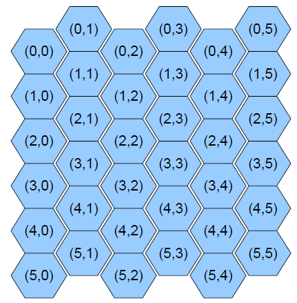

Дано прямоугольное поле размером m строк на n столбцов клеток. Левая нижняя клетка поля имеет координаты (0,0), правая верхняя клетка поля — (m - 1,n - 1).
Поле закольцовано в тор, то есть склеены верхняя и нижняя границы поля и правая и левая границы поля.
Из некоторой клетки можно перейти за один ход в любую из четырех соседних клеток (если таковые существуют). Например, из клетки (1,2) можно перейти в клетки (0,2), (2,2), (1,1), (1,3).
Расстояние между двумя клетками — это минимальное число ходов, за которое можно перейти из одной клетки в другую.
На стандартном потоке ввода задаются два целых числа m и n, задающие размеры поля.
Далее вводятся четверки целых чисел r1, c1, r2, c2, задающие координаты (r1,c1) первой и (r2,c2) второй клеток.
Для каждой четверки координат выведите на стандартный поток вывода расстояние между этими клетками.
Дано прямоугольное поле размером m строк на n столбцов клеток. Левая нижняя клетка поля имеет координаты (0,0), правая верхняя клетка поля — (m - 1,n - 1).
Поле закольцовано в тор, то есть склеены верхняя и нижняя границы поля и правая и левая границы поля.
Из некоторой клетки можно перейти за один ход в любую из восьми соседних клеток. Например, из клетки (1,2) можно перейти в клетки (0,2), (2,2), (1,1), (1,3), (0, 1), (0, 3), (2, 1), (2, 3).
Расстояние между двумя клетками — это минимальное число ходов, за которое можно перейти из одной клетки в другую.
Напишите шаблонный класс Coord, параметризованный типом координат. Класс должен содержать открытый тип value_type, открытые поля row, col и открытый конструктор от 0, 1 или 2 аргументов.
Напишите шаблонну функцию dist, принимающую три параметра: размеры поля, две координаты клеток, которая вычисляет расстояние между двумя клетками.
Дано прямоугольное поле из гексагональных элементов (см. рис) размером m строк на n столбцов клеток. Координаты шестиугольников определяются, как показано на рисунке.
Из некоторой клетки можно перейти за один ход в любую из шести соседних клеток.
Расстояние между двумя клетками — это минимальное число ходов, за которое можно перейти из одной клетки в другую.
В пространстве имен Game напишите шаблонный класс Coord, параметризованный типом координат. Класс должен содержать открытый тип value_type, открытые поля row, col и открытый конструктор от 0, 1 или 2 аргументов.
В пространстве имен Game напишите шаблонную функцию dist, принимающую три параметра: размеры поля, две координаты клеток, которая вычисляет расстояние между двумя клетками.
Реализовать класс строк с отложенным копированием при записи. Буфер для строки и дополнительные поля должны быть выделены в отдельную структуру (используйте идиому PIMPL). Интерфейс строки должен быть отделен от реализации.
String c, a = "abc"; String b = a; // в памяти хранится "abc" в одном экземпляре c = a; b += "aaa"; // для b создался новый "массив" символов. c[1] = 'f'; // a не изменилось cout << string(c);
Для хранения данных не используйте std::string и умные указатели.
В пространстве имен Equations определите шаблонную функцию quadratic, решающую уравнение az2+bz+c=0 в поле комплексных чисел над любым вещественным типом, поддерживаемым в заголовочном файле <complex>. Функция принимает массив (std::array) v из трех элементов комплексных коэффициентов уравнения (c - v[0], b - v[1], a - v[2]), функция возвращает пару std::pair из булевского значения и вектора корней. Булевское значение (first) равно false, если корней уравнения бесконечно много. В противном случае first равно true и в векторе second возвращается вектор корней, содержащий 0 элементов, если корней нет; 1 элемент, если уравнение имеет один корень (то есть линейное); 2 элемента, если уравнение имеет два корня (возможно, равные).
Если на вход передается массив (std::array) другого размера или массив не комплексных чисел - поведение функции не определено.
Дополнительно (по указанию преподавателя) предусмотрите EPS для сравнения std::norm() с нулем равным 32 * epsilon() (см. std::numeric_limits).
Пример использования функции:
int main()
{
using namespace std::complex_literals;
std::array v1{ 1.0 + 2.0i, 2.0 + 0i, 3 + 1.3i };
auto [res, v2] = Equations::quadratic(v1);
std::cout << res;
}
Или для стандарта C++11:
int main()
{
std::array<std::complex<double>, 3> v1{
std::complex<double>(1.0, 2.0),
std::complex<double>(2.0, 0),
std::complex<double>(3, 1.3)
};
auto res = Equations::quadratic(v1);
std::cout << res.first;
}